Problema 308 Aplicaciones del álgebra a la geometría 201. La suma de los inversos de los radios de los círculos ex-inscritos de un triángulo es igual al inverso del radio del círculo inscrito, y la raíz cuadrada del producto de los cuatro radios es igual al área del círculo (sic) [Es un “despiste”, se trata del área del triángulo N. del D.]. Severi, F. (1952) : Elementos de geometría II, con 144 figuras, traducción de la segunda edición italiana por el profesor T. Martín Escobar, de la Escuela Industrial de Gijón. Tercera reimpresión. Editorial Labor, Barcelona. Talleres Gráficos Ibero-Americanos S.A. Reproducción offset. (pág 201) Del prólogo: …Tener a la vista el origen histórico y buscar el fundamento psicológico de cada teoría y sobre todo las nociones de sentido común de donde ésta nace para encontrar la vía didácticamente más oportuna. Descubierta la vía maestra, es necesario comenzar de nuevo y desbrozar los senderos que en ella desembocan de las dificultades demasiado graves para los inexpertos, de modo que el alumno pueda recorrerlos siguiéndonos, sin excesivo esfuerzo, en el proceso constructivo.
Solución de José María Pedret, Ingeniero Naval. Esplugues de Llobregat (Barcelona). (17 de abril de 2006) |
|
SOLUCIÓN |
|
|
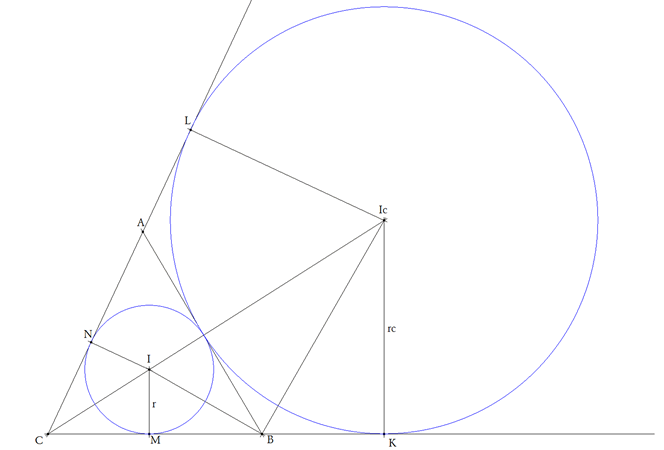
Como se ha demostrado varias veces en estas páginas, daremos por sabido que
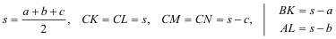 es claro que para los otros círculos ex-inscritos tendremos igualdades parecidas.
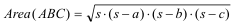 También es claro (ver figura) que podemos tomar al círculo inscrito I y al ex-inscrito Ic como homotéticos con centro de homotecia en C y razón de homotecia la razón de radios. Consideraciones parecidas podemos hacer con Ia e Ib.
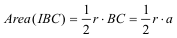 Teniendo en cuenta a los otros círculos ex-inscritos las áreas de sus triángulos tendrán expresiones análogas y por lo tanto podremos expresar el área del triángulo ABC como suma de las áreas de los tres triángulos análogos a IBC
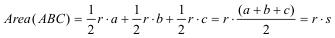 Por otra parte, comparando los triángulos IMC e IcKC teniendo en cuenta que son homotéticos
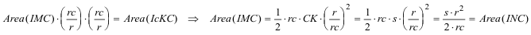 Considerando también a los otros círculos ex-inscritos podemos expresar
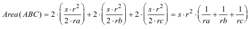 Que con la expresión anterior
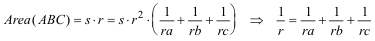 c.q.d. Volviendo al área del triángulo IMC, también tenemos
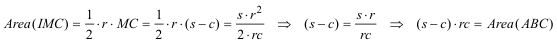 y análogamente obtendríamos expresiones parecidas para los otros dos círculos ex-inscritos; que unidas a la fórmula
correspondiente al círculo inscrito nos dan
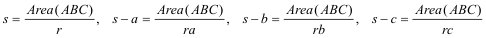 que introducidas a su vez en la fórmula de Herón
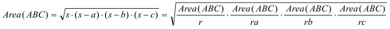 y despejando
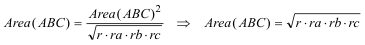 c.q.d. |